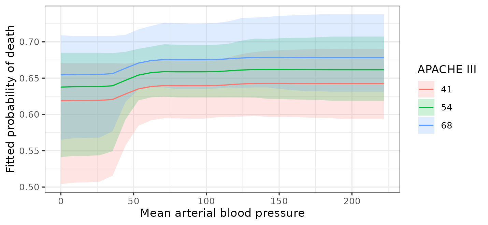
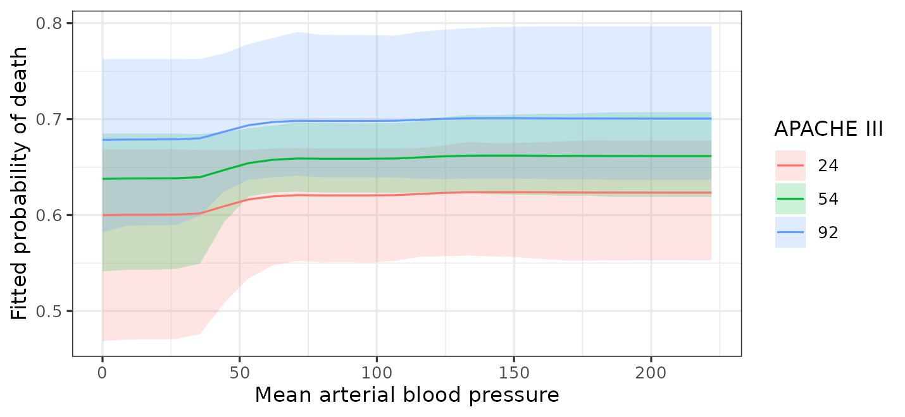

Introduction
A forest has no coefficients: there is no table of slopes to read, and no standard error to put beside one. This is the part of the workflow that changes most when moving from parametric models to BART. At the same time, this is the very reason to switch to BART: the absence of coefficients accompanies to the extreme flexibility BART has in modeling relationships without the analyst having to specify their form.
Though this may seem like a loss, modern approaches to characterizing variable relationships can support a model-agnostic workflow (Rohrer and Arel-Bundock 2026). The replacement for coefficients is to ask the fitted model questions about predictions. What does it predict for these people? What would it predict if this variable were different? How much does the answer differ between groups? The marginaleffects package (Arel-Bundock et al. 2024) answers all of them, and returns posterior intervals with those answers.
Two of those questions bartisan answers itself:
estimate_effect() considers one binary or factor treatment
and reports the contrast as the average treatment effect or as one
effect per unit, optionally within subgroups;
partial_dependence() averages the fitted surface over the
sample at each value of one or two predictors.
vignette("causal") contains the worked version of the
first. Everything else in this vignette uses marginaleffects:
slopes, contrasts between covariate values, a continuous predictor,
hypotheses comparing one estimate to another, and any grid that fixes
the other covariates at chosen values rather than averaging over
them.
This vignette covers the questions worth asking and how to phrase
them. vignette("bartisan") is the shorter tour, and this
expands its section on interpreting the fit.
In this guide, we will start from the three kinds of question the
package answers and then work through them in turn. First, we’ll
consider average effects of categorical and numeric predictors, along
with the prior setting (sparsity) that can quietly
attenuate a contrast. Next we’ll split those effects by subgroup and
test a moderation with the difference of the two, then plot the shape of
a fitted relationship and choose the scale on which an effect is
reported, and close with what these estimates can and cannot be taken to
mean.
Below, we load in the rhc dataset (see
vignette("bartisan") or
help("rhc", package = "bartisan") for details) and fit a
BART logistic regression model predicting death from the
available predictors. (Normally we would use multiple chains, perform
diagnostics on mixing, and possibly modify the fitting parameters; we
skip those here for brevity.)
library(bartisan)
library(marginaleffects)
data("rhc")
set.seed(2026)
# Fit a BART logistic regression model
fit <- bartisan(death ~ rhc + age + sex + race + edu + aps + meanbp + resp +
hema + pafi + paco2 + crea + surv2m + card,
data = rhc, family = binomial())
fit
#> Generalized BART
#>
#> Call:
#> bartisan(formula = death ~ rhc + age + sex + race + edu + aps +
#> meanbp + resp + hema + pafi + paco2 + crea + surv2m + card,
#> data = rhc, family = binomial())
#>
#> Family: "binomial" with the "logit" link
#> Observations: 1500
#> Structure: 1 forest of 50 trees, soft decision rules
#> Draws: 800 kept after 200 warmupPredictions, Comparisons, and Slopes
Everything below is one of the following:
A prediction is what the model expects for a set of
covariate values. predictions() gives one per unit or
covariate profile, avg_predictions() averages them.
A comparison is the difference between two predictions that differ in one variable. This is the closest thing to a regression coefficient, and it is often what we want to report.
A slope is the derivative of the prediction with respect to a numeric variable. These are often also used to report but come with some limitations due to some peculiarities of using a tree-based model.
Average Effects (avg_comparisons())
avg_comparisons() with no variables
argument gives every predictor at once, which for this model is a long
table. A few at a time is easier to read, and often only a few effects
are of primary interest anyway (Keele et al.
2020):
comp <- avg_comparisons(fit, variables = c("rhc", "age", "card"))
comp
#>
#> Term Contrast Estimate 2.5 % 97.5 %
#> age +1 0.00321 0.00160 0.00495
#> card yes - no 0.01300 -0.00558 0.08184
#> rhc 1 - 0 0.06492 0.01007 0.11539
#>
#> Type: responseThis reads as a coefficient table. Each estimate is an average
difference in predicted probability, holding everything else at each
patient’s own values: for a factor, between the levels named in the
Contrast column, and for a numeric predictor, for an
increase of one unit. rhc is coded 0 and
1, so its one-unit contrast is the treatment effect.
The comparison for age, for example, means that
increasing all units’ age by 1, keeping all other predictors at their
observed values, would yield an increase in the overall probability of
death of 0.321 percentage points (a very small effect on this scale),
with a 95% credible interval excluding 0. This isn’t a causal estimate;
it’s just what the model predicts would happen.
The Splitting Prior and a Contrast (sparsity)
An estimate here can come back as exactly zero, and an interval bound
with it; that is not a rounding artifact. The default splitting prior is
a variable-selection prior (i.e., one that can leave a predictor out of
the forest altogether), so in a draw where it uses the predictor in no
tree, the prediction does not depend on it, and the contrast is exactly
zero; the posterior of the contrast is a mixture with a point mass
there, holding whatever share of draws dropped the predictor.
marginaleffects centers a posterior at its median by default,
so once that point mass holds half of it the reported estimate is
exactly zero however far the rest of the posterior sits from zero.
Setting options(marginaleffects_posterior_center = mean)
asks for the mean instead, which is the how predict() and
estimate_effect() report predictions.
This can matter more than it sounds: on a weak signal, the prior can attenuate the estimate substantially, and its interval can cover the truth well below its nominal rate. A strong effect is untouched, because the prior never has reason to drop a predictor that is earning its splits, so this is a weak-signal problem rather than a general one.
If a contrast is what we are reporting, we can fit the model with
sparsity = FALSE, or by supplying split_prior,
which fixes the weights (i.e., the probability that each predictor is
chosen for a split) and so cannot drop anything.
?bartisan_control explains both options.
Choosing the Step (variables)
One unit is the default step size for a contrast but is often the
wrong scale. One point of an illness score is a small change; ten points
is a difference someone would notice. For example, the variable
aps ranges from 4 to 147 in the sample, so we might request
a comparison corresponding to increasing its value by 10.
avg_comparisons(fit, variables = list(aps = 10))
#>
#> Estimate 2.5 % 97.5 %
#> 0.0108 0 0.0283
#>
#> Term: aps
#> Type: response
#> Comparison: +10A numeric effect should always be reported together with the step it was computed at. Unlike a linear model, the answer here is not ten times the one-unit effect because the relationship is not assumed to be a straight line. We’ll see below other ways to characterize the relationship graphically.
Effects for Subgroups (by)
Supplying by to avg_comparisons() and other
functions in marginaleffects splits the average by a grouping
variable.
avg_comparisons(fit, variables = "rhc", by = "card")
#>
#> card Estimate 2.5 % 97.5 %
#> no 0.0658 0.01324 0.116
#> yes 0.0636 0.00852 0.114
#>
#> Term: rhc
#> Type: response
#> Comparison: 1 - 0The two subgroup estimates are close, and both intervals reach zero.
A common mistake is to stop here and conclude that the effect differs
between groups; that comparison is not a test. The question is whether
the two effects differ from each other, which needs the difference of
the two (i.e., a difference of differences) with an interval of its own.
This can be requested by specifying
hypothesis = ~pairwise.
avg_comparisons(fit, variables = "rhc", by = "card",
hypothesis = ~pairwise)
#>
#> Hypothesis Estimate 2.5 % 97.5 %
#> (yes) - (no) -0.000921 -0.0236 0.0109
#>
#> Type: responseThe difference is small with an interval covering zero, so there is no evidence here that the effect of catheterization varies by cardiovascular disease status. This is how to test an interaction in a model that never had an interaction term to test, and the interval on that difference is the only thing that separates a real interaction from two subgroup estimates that merely look different.
avg_predictions() does the same thing for predictions
rather than differences, which is useful for describing groups:
avg_predictions(fit, by = "card")
#>
#> card Estimate 2.5 % 97.5 %
#> no 0.636 0.608 0.661
#> yes 0.687 0.657 0.728
#>
#> Type: responseThese correspond to the fitted predictions among those in each cardiovascular disease status group. That answers a different question from whether the model predicts that changing units’ disease status changes the probability of death, which corresponds to running the following:
avg_predictions(fit, variables = "card")
#>
#> card Estimate 2.5 % 97.5 %
#> no 0.646 0.617 0.672
#> yes 0.666 0.635 0.713
#>
#> Type: responseIn the latter, avg_predictions() computes predictions
for all units, first setting card to "no" and
then to "yes".
The Shape of a Relationship (partial_dependence())
Averages can hide the shape of the relationship between a predictor
and the outcome. To see the fitted function we plot predictions against
one predictor while the others are averaged over, which is what
partial_dependence() does: it sets the predictor to each
value of a grid in turn, predicts for every unit, and averages within
each posterior draw, so the interval that comes back is on the average
prediction rather than on any one patient’s.
partial_dependence(fit, ~ x) builds the grid, and
plot() draws it.
library(ggplot2)
pd <- partial_dependence(fit, ~aps)
pd
#> Partial dependence
#>
#> Predictor: "aps"
#> Averaged over 1500 units, on the
#> "response" scale
#>
#> aps estimate lower upper
#> 4.00 0.613 0.518 0.668
#> 9.72 0.613 0.518 0.668
#> 15.44 0.613 0.520 0.668
#> 21.16 0.615 0.531 0.668
#> 26.88 0.620 0.555 0.668
#> --- 16 rows omitted ---
#> 124.12 0.701 0.639 0.797
#> 129.84 0.701 0.639 0.797
#> 135.56 0.701 0.639 0.798
#> 141.28 0.701 0.639 0.798
#> 147.00 0.701 0.639 0.798
#>
#> ℹ lower and upper bound the 95% credible interval on the average prediction.
#> ℹ `n_print` in `print()` (`?bartisan::print.bartisan_partial()`) sets how many
#> rows are shown, half from each end; `print(., n_print = Inf)` shows all of
#> them.
plot(pd) +
labs(x = "APACHE III score on day 1", y = "Fitted probability of death")
# Same thing:
## plot(fit, ~aps)The probability of death rises with the illness score, and the rise
is not a straight line on any scale the model was told about; nothing
was specified to find the shape. plot() returns a
ggplot2 object, so the labels above are added the way they
would be to any other plot.
The band is a credible interval and is wide at the top, where few patients were that sick, so the ends of a curve deserve more caution than the middle: with little data out there the forest shrinks its predictions toward the overall mean, which flattens the curve at both edges of the predictor’s range.
Naming a second predictor shows how the shape differs across groups.
pd2 <- partial_dependence(fit, ~ aps + rhc)
pd2
#> Partial dependence
#>
#> Predictors: "aps" and "rhc"
#> Averaged over 1500 units, on the
#> "response" scale
#>
#> aps rhc estimate lower upper
#> 4.00 0 0.587 0.488 0.645
#> 9.72 0 0.587 0.488 0.645
#> 15.44 0 0.587 0.489 0.645
#> 21.16 0 0.589 0.502 0.645
#> 26.88 0 0.594 0.521 0.645
#> --- 42 rows omitted ---
#> 124.12 1 0.738 0.671 0.831
#> 129.84 1 0.738 0.671 0.831
#> 135.56 1 0.738 0.671 0.831
#> 141.28 1 0.738 0.671 0.831
#> 147.00 1 0.738 0.671 0.831
#>
#> ℹ lower and upper bound the 95% credible interval on the average prediction.
#> ℹ `n_print` in `print()` (`?bartisan::print.bartisan_partial()`) sets how many
#> rows are shown, half from each end; `print(., n_print = Inf)` shows all of
#> them.
plot(pd2) +
labs(x = "APACHE III score on day 1", y = "Fitted probability of death",
color = "Catheterized", fill = "Catheterized")
The two curves run close together; if they diverged, that would be a moderation worth reporting, and the difference of differences above is how to put a number on it.
Values of the Second Predictor
A second predictor with a few values gives one curve for each of them, which is what happened above. With a continuous predictor, it is held at three values near its quartiles and a message reports them.
plot(fit, ~ meanbp + aps) +
labs(x = "Mean arterial blood pressure", y = "Fitted probability of death",
color = "APACHE III", fill = "APACHE III")
#> ℹ Grouping by `aps` at 41, 54, and 68, three of its values near its quartiles.
#> ℹ Set `values` to choose them yourself.
values chooses others, and an entry of it may be a
function of the predictor rather than the values themselves.
values = list(z = unique) asks for every value a predictor
takes, which is usually what a numeric predictor with four or five of
them wants; the illness score has 114, so here we write the summary we
want instead.
plot(fit, ~ meanbp + aps,
values = list(aps = function(x) quantile(x, c(.05, .5, .95)))) +
labs(x = "Mean arterial blood pressure", y = "Fitted probability of death",
color = "APACHE III", fill = "APACHE III")
The Same Curve Through marginaleffects
marginaleffects::avg_predictions() produces the same
estimates as partial_dependence(). It has additional
options that may be helpful, but otherwise the syntax is similar.
at <- quantile(rhc$aps, c(.1, .5, .9))
# Uses posterior mean
partial_dependence(fit, ~ aps, values = list(aps = at))
#> Partial dependence
#>
#> Predictor: "aps"
#> Averaged over 1500 units, on the
#> "response" scale
#>
#> aps estimate lower upper
#> 29.9 0.623 0.562 0.668
#> 54.0 0.656 0.624 0.687
#> 83.0 0.687 0.639 0.757
#>
#> ℹ lower and upper bound the 95% credible interval on the average prediction.
# Uses posterior median by default
avg_predictions(fit, variables = list(aps = at))
#>
#> aps Estimate 2.5 % 97.5 %
#> 29.9 0.626 0.562 0.668
#> 54.0 0.655 0.624 0.687
#> 83.0 0.685 0.639 0.757
#>
#> Type: responseThe two summarize one posterior two ways.
partial_dependence() reports its mean and
avg_predictions() its median, which is the whole of the
difference between the estimates; the intervals are quantiles of the
same draws and agree to the digit.
What marginaleffects adds is control over what the other
predictors do. partial_dependence() always averages them
over the sample, while predictions() and
plot_predictions() in marginaleffects allows one
to hold them fixed instead, and prints the profile it chose beside the
estimates:
plot_predictions(fit, condition = list(aps = at), draw = FALSE)
#> rowid estimate conf.low conf.high df age card crea edu hema meanbp
#> 1 1 0.6296 0.5008 0.7477 Inf 61.42 no 2.132 11.64 31.68 78
#> 2 2 0.6661 0.5464 0.7775 Inf 61.42 no 2.132 11.64 31.68 78
#> 3 3 0.7051 0.5697 0.8176 Inf 61.42 no 2.132 11.64 31.68 78
#> paco2 pafi race resp rhc sex surv2m aps
#> 1 38.85 217.4 white 28 0 male 0.587 29.9
#> 2 38.85 217.4 white 28 0 male 0.587 54.0
#> 3 38.85 217.4 white 28 0 male 0.587 83.0Those columns are why the numbers move: each row is a prediction for
one synthetic patient who is average or modal in every other respect,
where the curve above is an average over the patients in the data. The
average is what to report for a population, and the profile what to
report for a described kind of patient. plot_predictions()
also takes an arbitrary grid and will draw slopes and comparisons across
a condition, which is where to go when the question outgrows a partial
dependence plot.
Slopes and the Predictor Transform (avg_slopes())
marginaleffects::avg_slopes() reports the derivative of
the regression function with respect to a predictor; this is closest
quantity to a regression slope. However, whether that derivative means
anything depends on gate and x_transform in
bartisan_control(). Under a soft gate, the fit is a smooth
function of the (transformed) predictor; with
gate = "hard", the fit is piecewise constant under any
transform and has no derivative worth taking.
Because a numeric predictor is transformed to the interval \([0, 1]\) according to
x_transform, how its effect translates into a slope depends
on the value supplied. Writing the fit as \(f(T(x))\), a slope is \(f'(T(x))\,T'(x)\), where \(T(\cdot)\) is the transform function
specified in x_transform: an affine \(T(\cdot)\) has a known constant derivative,
so only \(f'\) is estimated.
The default, "smoothcdf", is differentiable, so
avg_slopes() works, but any error in estimating the density
of \(X\) yields additional error in the
estimation of the slope. Under "range", which is an affine
map from the covariate’s observed range to \([0, 1]\), slopes are more accurate.
"quantile" maps each predictor through its empirical
distribution function, which is a step function, so the fitted function
is a step function of the original predictor and the difference quotient
grows without bound as the step shrinks. There is no derivative there to
estimate, and the number avg_slopes() returns is a property
of the step size rather than of the fit.
So, when a slope is the quantity being reported, it is best to fit
the model with x_transform = "range", though the default
can be okay as well, especially with a large sample (which yields less
error in the estimation of the predictor distribution). For everything
else, it makes most sense to use avg_comparisons() with a
step we can interpret, as with aps = 10 above, which
evaluates the fit at two points a substantive distance apart rather than
dividing by a vanishing one. This is documented at
?bartisan-marginaleffects.
Descriptions of the Fitted Model
Everything here is a description of the fitted model.
avg_comparisons() reports what the model predicts would
differ between two versions of the data, which is a causal quantity only
if the model contains enough covariates to account for confounding.
Patients were not randomized to catheterization, so for this fit that is
a strong assumption. vignette("causal") covers what is
needed.
The intervals are posterior credible intervals under the model: they cover the uncertainty in the fitted function, and they do not cover the possibility that the model is missing a confounder, that the outcome is measured with bias, or that the sample is not the population of interest.
Further Reading
vignette("varying") covers vc(), which
writes an effect into the model as a parameter with a prior of its own
rather than reading it off as a contrast, and is where to go when the
effect is the point of the model. vignette("importance")
covers which predictors the forest uses, which is a different question
from how much they move the outcome.
vignette("diagnostics") covers whether the fit can be
trusted before any of this is read.
?bartisan-marginaleffects documents which
marginaleffects functions are supported and the arguments that
are specific to this package, and ?estimate_effect and
?partial_dependence document the two questions answered
without it.